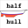 Macro Half-Hull Model |
| Description |
|---|
| Cette macro génère une forme en trois dimensions d'une demi-coque et pleine coque avec une série de dessins en 2 dimensions. |
| Auteur |
| Piffpoof |
| Liens |
| Recettes macros Comment installer une macro Comment ajouter une barre d'outils |
| Version |
| 1.0 |
| Date dernière modification |
| 2016-01-25 |
{kind=link}
Cette macro crée un une forme simple de coques de bateaux et navires. Il est destiné à aider les personnes modélisant une coque en fournissant les sections de coupes de la coque d'une manière directe afin qu'ils puissent éviter le fastidieux processus complet.
{kind=link}
Background
Since antiquity boat builders have had to design boats and then realise them in a three dimensional environment where very few lines are straight, very few surfaces flat and no angles constant over a distance. Hull models were used to make to-scale models which could then be used to review the design or communicate concepts to other persons. The laws of hydrodynamics demand that any vessel passing through a liquid be symmetrical in the cross-section if it is to track (move in a straight line) accurately. Consequently building one side of the hull in the model was all that was necessary - if the half-hull was perfect then its mirror image would also be perfect. In latter years half-hulls became used for symbolic purposes such as plaques, and nautical art.
This code came out of a project to build a model in FreeCAD of a 12.5 metre sailing boat. The builders no longer had drawings and the son of the original owner doubted there ever were full drawings. Consequently the hull dimensions had to be measured and then a model constructed within the software, Modern software packages like FreeCAD offer many beneficial features like symmetry constraints but when the final measurement is a model that is "easy on the eye", much "massaging" of models is required. This code was written to help automate that process.
The initial purpose of this code was to provide a symmetrical hull which was malleable so it could be fitted to the 3D model being constructed. As the software progressed it was generalised so hopefully it would be of some use to persons:
- boat designers producing boat diagrams which can be built from
- boat builders who are trying to model what is described on their diagrams
- model hull builders.
Certainly commercial boat designers have all sorts of high end software to assist their work, this isn't supposed to replace that. Rather this is for the hobbyist or home builder to tinker around with.
Nautical blueprints have a distinct history with respect to buildings and so are somewhat different in presentation. This is an example of a sailing boat which is more than a century old:
{kind=link}
One of the end goals of this software is to use the Draft workbench to generate some of these diagrams using the model to generate the lines.
Note on Units in FreeCAD:
At present there isn't really any units management system within FreeCAD, but obviously a boat builder or modeller will need an accurate dimensioning system. To use this macro, decide to set the FreeCAD grid size to what ever is appropriate for your work (e.g. mm, cm, inch, foot). FreeCAD is consistent, one FreeCAD unit will constantly equal to one FreeCAD unit. And if you have decided to have a FreeCAD unit equal a specific physical length, then your drawings will remain consistently dimensioned. At present there is work on a units system for FreeCAD so this situation may change soon.
Description
For this macro the hull shapes are defined by a minimum of 3 FreeCAD Sketches: one in the YZ plane, one or more in the XZ plane, one in the XY plane. Here is the minimum hull supported by this macro, it has only 3 Sketches:
{kind=link}
Note: in the above diagram we are looking directly at the stern, the bow is pointing away from the viewpoint.
From front to back (bow to stern) the 3 Sketches are:
| stemline |
YZ plane |
red line in sketch |
| cross-section |
XZ plane |
green line in Sketch |
| transom |
XY plane |
blue line in Sketch |
Perhaps it is easier to see with 7 Sketches (one in YZ plane, one in XY plane and 5 in the XZ plane):
{kind=link}
With 5 Sketches in the XZ plane it is becoming easier to perceive the shape of the hull. The next 2 pictures show the Sketch lines superimposed on the model FreeCAD constructs,
{kind=link}
the second is the same model rotated 90 degrees so the bow is in the foreground:
{kind=link}
Some points to consider:
- the Sketches are only for:
- the stemline (or bow line) in the YZ plane (red in the above diagram);
- the top of the transom in the XY plane (blue in the above diagram);
- multiple cross-sections of the hull in the XZ plane (green in the above diagram)
- only the starboard side of the hull is drawn in the Sketches, the port side will be generated as a mirror image
- each multiple-segment line must be in a separate Sketch
- each Sketch must have the same number of line segments (which is 3 in the previous examples)
- the more line segments in each Sketch, the closer the FreeCAD generated model will approximate a curved hull
- there is no limit to the number of line segment in each Sketch, any number from one up
- there is no limit to the number of Sketches in the XZ plane (i.e. cross-sections), any number from one up
With enough Sketches the model generated may even approach:
{kind=link}
The HalfHull macro generates 4 models:
- starboard half-hull
- port half-hull
- complete hull
- bulkheads for the complete hull, either with a flush deck or with a coachhouse
These models are all output in the unified location space of FreeCAD so they can be fitted together - for example the bulkheads can be inserted into the complete hull seamlessly. This is a picture of bulkheads in a boat model during construction:
{kind=link}
As well as the bulkheads generated by the macro (note that these bulkheads are for a coachhouse rather than a flush deck):
{kind=link}
The composite image below shows the main outputs from this software (the port side half-hull is actually not shown but it is the mirror of the starboard half-hull which is shown). The outputs are in clockwise order from the upper left corner:
- starboard half-hull
- complete hull
- bulkheads (for flush deck, the bulkheads in the previous image were for a coachhouse deck)
- the complete hull with the bulkheads inserted
{kind=link}
As novelty features, the macro will also optionally produce plaques for the half-hulls, and even a bottle for the complete hull:
{kind=link}
{kind=link}
Installation
All the code for halfHullModel.FCMacro is in one macro. So installation is comprised of copying the code to the appropriate Macro directory and invoking the Build Utility from the Macro menu, the Python console or a toolbar button (the preferred method).
- see How to install macros for information on how to install this macro code
- see Customize Toolbars for information how to install as a button on a toolbar
Usage
The FreeCAD operations involved in generating the hull model are rather complex and numerous. Things like the direction a line is drawn can cause the FreeCAD construction of the hull to either abort or turn out like:
{kind=link}
Consequently the steps below need to be followed closely. The macro does allow for certain data inconsistencies but generally if the data (i.e. the Sketches) are incorrect then the output will look like a cheese grater or the macro fill fail with an error.
The following instructions refer to the quadrants of the XY graph, this refers to the 4 quarters of the XY graph and they are labelled as follows:
{kind=link}
Create a New Document
The very first thing is to create a new document in FreeCAD  . This document will hold all the Sketches that make up your hull definition.
. This document will hold all the Sketches that make up your hull definition.
Create the Stemline
The first step is one of creating data for the hull model to be made from. The data is supplied in the form of Sketches within FreeCAD. After the hull model is generated, if changes are to be made then the Sketches are simply edited, and the second step of running the macro repeatedly.
- create a new sketch
 , in the YZ-Plane
, in the YZ-Plane - start at origin (0,0) and draw upwards into Quadrant I
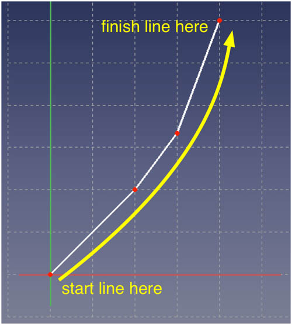 - the bottom end of the stemline is at the origin (0,0) - this will be the point from where the placement of all the cross-sections and transom will be made
- the number of line segments in this Sketch determines the number which will be required in each other Sketch
- save sketch

- for ease of identification it is probably worth naming the Sketch something like "stemline sketch"
{kind=link}
Create the Cross-section Sketch(es)
- create a new sketch , in the XZ-Plane
- the following dialog will appear:
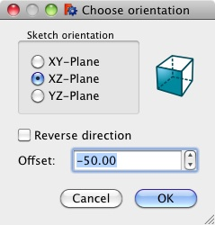
The dialog is asking how far from the origin the Sketch should be placed. This will refer to how far the cross-section is from the bottom of the stemline (which was placed at (0,0)). The cross-sections can be equally spaced but need not be. The forward-most cross-section will be at Y=0 (i.e. the origin where the stemline bottom ends) or at Y<=0. The cross-sections will be at increasingly negative Y values until the transom is at the most negative Y value. In the example above, the cross-section Sketch will be placed 50 FreeCAD units from the origin on the negative Y axis. - start on the Y axis and draw upwards into Quadrant I
- the first (i.e. foremost) cross-section should start at origin (0,0) (or it will look odd as the stemline ends at 0,0) but other cross-sections need only start on the Y axis. - use the same number of line segments as in the Stemline Sketch
- save sketch
- repeat as this step necessary, it may be quicker to copy this sketch and then space the copies on the Y-axis, modifications may be made to the individual Sketches as required
- for naming, it will make things easier to give some sort of sequence to the cross-sections, starting at the bow (i.e. the stemline) and increasing towards the stern (i.e. the transom)
{kind=link}
Create the Transom Sketch in the XY Plane
- create a new sketch , in the XY-Plane
- start on the Y axis between quadrant III and IV, and draw upwards into Quadrant IV so that the end point is coincident with the rightmost point of the lowest cross-section Sketch in the YZ-plane
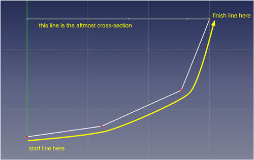 - use the same number of line segments as in the stemline Sketch
- save sketch
- for ease of identification it is probably worth naming the Sketch something like "transom sketch"
{kind=link}
Save the New Document
Now save the document  which contains the Sketches that will define the hull shape, giving it some name that is descriptive
which contains the Sketches that will define the hull shape, giving it some name that is descriptive
Once the Sketches have all been created and positioned, the document should look like this from the top view  :
:
{kind=link}
The principal limitations for constructing the model are:
- the stemline bottom should end at (0,0)
- the bottom centremost end of each cross-section should end at the Y axis - note that it can have any Z value
This concludes the first step which is one of creating the data which the macro will use to create both half-hulls and complete-hulls. The second step is described in the following section which is titled User Interface
User Interface
In this step the macro will gather some information from the user and then process the input Sketches to generate the desired hull models. This is the only GUI image for the macro and is primarily configuration details for the production of the hull models from the Sketches:
{kind=link}
The choices on the GUI window are:
- Starboard half-hull
- checking this will cause the macro to produce a starboard half-hull model- Mounting plaque
- if checked the macro will mount the half-hull on a plaque- Allow space for keel
- if checked will cause the half hull to be mounted higher on the plaque than the centre position, this is so a separately generated keel could be placed below the hull
- Allow space for keel
- Mounting plaque
- Port half-hull
- checking this will cause the macro to produce a port half-hull model- Mounting plaque
- if checked the macro will mount the half-hull on a plaque- Allow space for keel
- if checked will cause the half hull to be mounted higher on the plaque than the centre position, this is so a separately generated keel could be placed below the hull
- Allow space for keel
- Mounting plaque
- Complete hull
- checking this will cause the macro to produce a complete model- Bottle for complete hull
- if checked the macro will place the complete hull inside a transparent bottle (complete with cork)- Allow space for keel
- if checked will cause the half hull to be positioned higher in the bottle than the centre position, this is so a separately generated keel could be placed below the hull
- Allow space for keel
- Bottle for complete hull
- Bulkheads for flush deck
- checking this will cause the macro to produce bulkheads whose tops are level with the top of the hull, bulkheads will not be generated for the most forward 2 cross-sections or the aft-most 2 cross-sections - Bulkheads for coachhouse
- checking this will cause the macro to produce bulkheads whose tops are possibly above the top of the hull.- Bulkheads to skip at bow determines how many cross-sections will be left without a bulkhead at the bow
- Bulkheads to skip at stern determines how many cross-sections will be left without a bulkhead at the stern
- The dimensions of the top of the bulkheads will be configured as per the following diagram:
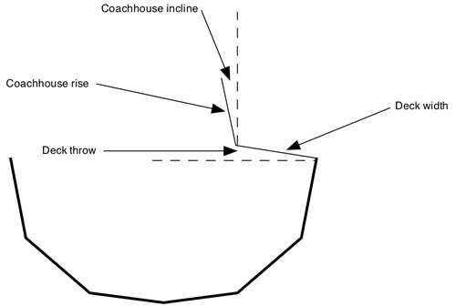 - Cancel button
- the execution is halted and the window closes - Re-Use Last File button
- the execution uses the data file AND SETTINGS from the the last run, any changes to settings are ignored - Select File button
- the standard Open File window is opened where the user can either select a file or Cancel and exit
{kind=link}
When the macro runs it takes configuring data from the user and then reads Sketcher sketches in the selected input file.
Note: As the macro works through the Sketches it prints out any exceptions as well as some milestones on the Report View. If you get unexpected results or some parts are missing, that is probably the first place to check.
Options
There are various types of bows and sterns for boats, with sterns having much more variety than bows. Here are examples of transoms and bows from the real world alongside the similar macro output:
Sheer Stern
Probably the most common stern, typical of all sizes of vessels from commercial ships through to rowing boats.
| 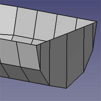 |
{kind=link}
{kind=link}
- the XY transom should be as close to the aftmost cross-section as is possible.
Sugar-Scoop Stern
Most likely to be found on a sailing yacht, it is a product of designing to maximise the length of the waterline to benefit from class rules for racing under sail.
| 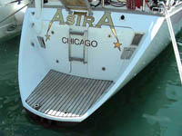 | 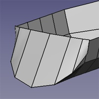 |
{kind=link}
{kind=link}
- place the aftmost 2 cross-sections as close as is feasible, then rotate the aftmost of the two through to an angle of 45 degrees (or whatever is called for) around the X-axis
Canoe Stern
Found on all sizes of water craft, power and sail, pleasure and commercial.
| 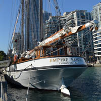 | 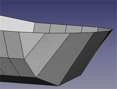 |
{kind=link}
{kind=link}
- place the aftmost 2 cross-sections as close as is feasible, then rotate the aftmost of the two through to an angle of 45 degrees around the X-axis
Normal Bow
There is a lot less variety in bow shapes than with transoms:
| 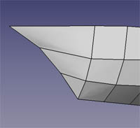 |
{kind=link}
{kind=link}
Trireme Bow
Although not seen very frequently in the last 2 millenia, this was once the definitive bow profile for war-making vessels:
| 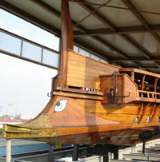 | 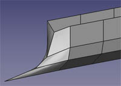 |
{kind=link}
{kind=link}
- in order for the bow to be correct the poly-line for the stemline needs to be drawn from the bottom to the top which will mean right to left in the Sketcher
Sample Files
These files are samples of Sketch data to use with the macro, mainly they are the models for the screen snapshots in the Options section above. The files work with the Macro and so can be downloaded and played with to adapt to your specific requirements. The prefix of 5x3 (for example) means the model has 5 cross-sections and 3 line segments per cross-section (i.e. sketch)
To use one of the example files, right-click on the file link and select Save File As... from the menu. The filename will be specified, choose the desired folder/directory to hold the example file.
- 3x1 hull with the minimum number of Sketches (stemline, one cross-section, transom) with 1 line segment per Sketch <<<<< NOT CURRENTLY WORKING
- 5x3 with normal bow
- 5x3 with trireme bow
- 5x3 with canoe stern
- 5x3 with sheer transom stern
- 5x3 with sugar scoop stern
- 5x5 workboat
- 7x5 pirate boat
- 12x3 sailing yacht
Remarks
- almost all the examples on this page are generated with only 3 line segments defining the side of the hull which gives a very faceted appearance, increasing the number of segments in each Sketch would generate a much smoother surface which would increase the realism
- doesn't do keels, skegs or rudders, in other words, it doesn't do any of the wet area
- doesn't do square bows like push-boats or towed barges
- doesn't do submarines (although it will do the lower half of a submarine)
Known Problems
The 'Ruled Surface' feature of FreeCAD is used to generate the hull sections from the Sketches. It can sometimes generate the wrong result and display a grater like surface instead of a smooth planar one. This will typically occur when the Sketches are rotated such as when a Sugar Scoop stern is modeled. Also angling a Sheer Transom stern can cause this. If it occurs then typically it will do so in either the half-hull models or the complete hull model - it never seems to occur in all three models for the same hull. Also it usually only happens at the extreme bow or stern. If it happens to section in the middle of the boat then most likely one of the Sketches was drawn in the wrong direction (i.e. either random sequence or top-down where as all lines should be drawn bottom-up)
It can usually be removed by using the following steps:
- in the Model tab of the Combo View, click on the faulty segment to select it, the faulty segment will show as highlighted on the display
- select the Data tab on the bottom half of the Combo View, the lower part of the window will have a Label "Ruled Surface" with a single parameter 'Orientation'
- there is a popup menu to the right which has the values 'Automatic', 'Forward', 'Reversed', it will initially be set to 'Automatic'
- try one of the other settings (remembering the faulty segment must still be selected in the upper part of the Combo View) which will usually correct the problem
The following screen snapshot shows the relevant portion of the screen:
{kind=link}
Future Possibilities
- replace line segments of cross-sections with curved lines
- this is just at the idea stage but would give a much smoother surface in the vertical dimension, however the horizontal surface would still be faceted as it is now - integrate with Draft workbench to produce drawings from models
- an initial goal, but the feasibility has not been investigated - handle keels, skegs and rudders
- one work around for keels with the present system is to model the keel as a half-hull on it's own and then assemble it onto the bottom of the main hull; this would still do nothing for rudders and skegs though
Glossary
As with any ancient and practiced trade, a rich and sometimes confusing vocabulary has developed around ships, boats and nautical practices. In describing this macro it is both awkward and inefficient to describe the process without using the correct and accurate terms. The obvious problem is that the average lay person will be unfamiliar with such terminology, hence this vocabulary:
| aft | the rear aspect of anything on a boat |
| chine | a planar facet of a hull, can be used to approximate a curved surface or as a finished building technique |
| coachhouse | the part of the central deck which is raised above the deck level - usually to accommodate increased headroom in the interior of the boat |
| flush deck | a deck that runs smoothly from the top of one side of the hull to the other, the converse to a coachhouse deck |
| forward | also 'fore'; the front aspect of anything on a boat |
| port | lefthand side looking forward |
| starboard | righthand side looking forward |
| stemline | the sloped vertical edge which is the bow of a hull |
| transom | the curved top edge of the stern face which can be flat or curved |
Links
- Half Hull Model Ship (Wikipedia)
- Why Half Hulls (Maritime Half Hull Ship Models and Nautical Art website)
- Traditional Model Yacht Design (US Vintage Model Yacht Group)
Script
This script is running bug free. But due to the large range of possible inputs it may fail for some inputs. If so please report it.
The script is too long for the Wiki to display so it must be copied or downloaded from unabbreviated script on pastebin.com